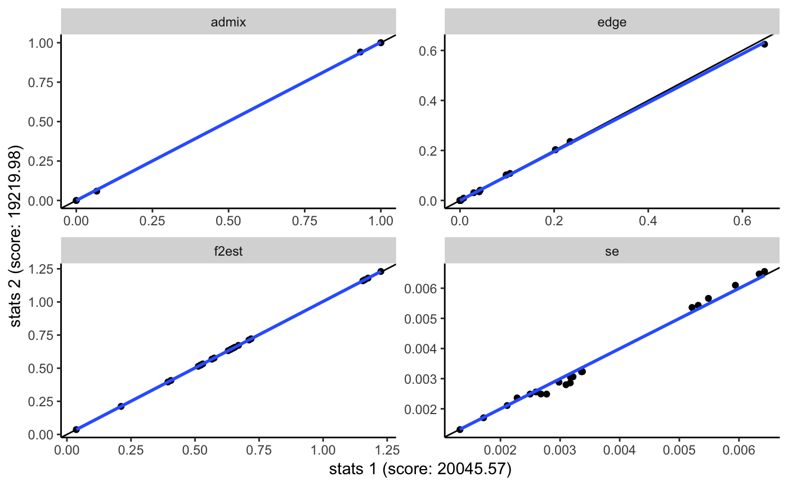
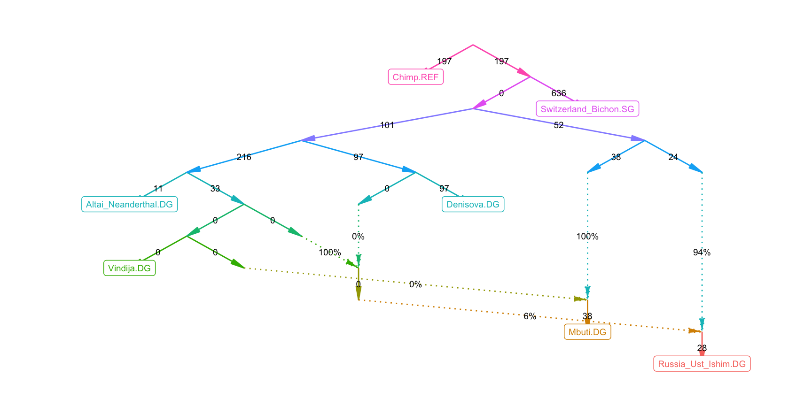

admixtools.RmdFor the examples below the following R packages need to be loaded.
If you have access to pre-computed f2-statistics, you use them to compute admixture weights. The following should work on O2.
target = 'Denisova.DG'
left = c('Altai_Neanderthal.DG', 'Vindija.DG')
right = c('Chimp.REF', 'Mbuti.DG', 'Russia_Ust_Ishim.DG', 'Switzerland_Bichon.SG')f2_dir = '/n/groups/reich/robert/projects/admixprograms/f2blocks_v41.1/'
qpadm(target, left, right, f2_dir = f2_dir, fstscale = 3.6)## # A tibble: 2 x 4
## target left weight se
## <chr> <chr> <dbl> <dbl>
## 1 Denisova.DG Altai_Neanderthal.DG 43.4 17.7
## 2 Denisova.DG Vindija.DG -42.4 17.7This function only reports qpAdm admixture weights, and doesn’t determine the number of independent source populations. The qpadm function also hasn’t been tested as much as the qpgraph function, and the results are sometimes not very accurate, in particular when the weights are outside the range of [0, 1], like in this example.
The f2-statistics can also be used to fit an admixture graph to the data.
Here, graph1 is a specific graph included in this R package, but it can be any other graph in one of three formats.
igraph object.qpGraph graph file, which will be read and parsed.The only requirements for the input graph are that the graph is a valid admixture graph – a DAG with one outgroup edge connecting the root to a leaf node – and that f2-statistics exist for all leaf nodes. The first edge should go from the root to the outgroup.
The qpgraph output is a list with five items:
## # A tibble: 27 x 5
## from to type weight label
## <chr> <chr> <chr> <dbl> <dbl>
## 1 R Chimp.REF edge 0.203 0.2
## 2 R N4N edge 0.203 0.2
## 3 N0N Altai_Neanderthal.DG edge 0.00766 0.01
## 4 N0N N3N0 edge 0.0293 0.03
## 5 N1N N0N edge 0.234 0.23
## 6 N1N N3N1 edge 0.0982 0.1
## 7 N2N0 N1N edge 0.106 0.11
## 8 N2N0 N3N6 edge 0.0428 0.04
## 9 N2N1 Vindija.DG edge 0 0
## 10 N2N1 N2N3 edge 0 0
## # … with 17 more rowsThis works for any populations for which there are precomputed f2-statistics.
allpops = list.dirs(f2_dir, full.names = FALSE, recursive = FALSE)
rand_pops = sample(allpops, 20)
rand_graph = random_admixturegraph(rand_pops, numadmix = 3)
rand_results = qpgraph(rand_graph, f2_dir = f2_dir, fstscale = 3.6, verbose = TRUE)There are wrapper function which call the origial AdmixTools programs and read the results. This can be used to check if the results of qpgraph are correct.
qpgraph_bin = '/home/np29/o2bin/qpGraph'
qpadm_bin = '/home/np29/o2bin/qpAdm'
env = 'export LD_LIBRARY_PATH=$LD_LIBRARY_PATH:/n/app/openblas/0.2.19/lib/:/n/app/gsl/2.3/lib/;'
#prefix = '/n/groups/reich/DAVID/V41/V41.1/v41.1'
prefix = '/n/groups/reich/robert/projects/admixprograms/v41.0_small'
qpadm_wrapper(target, left, right, paste(env, qpadm_bin), prefix)
qpgraph_ref_results = qpgraph_wrapper2(graph1, paste(env, qpgraph_bin), prefix)Unless outdir is specified, calling these wrapper functions may overwrite files in the working directory!
The following function makes it easy to compare qpGraph results.

Currently the precomputed f2-statistics are not scaled, which it why it is necessary to set fstscale to 3.6 to get matching results. Without that scaling, the absolute values may differ, but the relative values should still be ok.
There are at least a few examples where the results seem to be approximately correct. Please let me know if you find examples where the results are different!
If you’re not on O2, or want use different f-statistics, you first have to compute allele frequencies for your populations of interest from data in packedancestrymap format.
pops = c('Denisova.DG',
'Altai_Neanderthal.DG',
'Vindija.DG',
'Chimp.REF',
'Mbuti.DG',
'Russia_Ust_Ishim.DG',
'Switzerland_Bichon.SG')
afdat = packedancestrymap_to_aftable(prefix, pops, na.action='remove')We also need to keep track of the number of samples in each population.
indfile = read_table2(paste0(prefix, '.ind'), col_names = c('iid', 'sex', 'group'))
popcounts = indfile %>% filter(group %in% pops) %$% table(group)Reading the genotype data is rather slow, so it’s a good idea to save the output.
Then you can use these allele frequencies to compute block-jackknife estimates of f2-statistics.
# This assigns each SNP to a jackknife block, based on a 5 centimorgan genomic distance
block_lengths = get_block_lengths(afdat)# This computes the f2-statistics. By default, f2 is scaled by a factor of 3.6 which
# makes it approximately equal to Fst. In contrast, the f2-statistics in
# /n/groups/reich/robert/projects/admixprograms/f2blocks_v41.1/ are not scaled,
# and so the scaling is applied in the qpadm and qpgraph functions when using those f2-statistics.
f2_blocks = afs_to_f2_blocks(afs = afdat, popcounts = popcounts, block_lengths = block_lengths)This also takes a while, so you should also save it.
Now we can use this to compute admixture weights.
We can use the same f2-statistics as input for qpGraph.
Since evaluating one graph doesn’t take long once the f-statistics are pre-computed, we can evaluate many graphs and find graph topologies with good fits.
In order for that to be as fast as possible, we can precompute and reuse f3-statistics and the inverse of the f3-statistic covariance matrix.
precomp = qpgraph_precompute_f3(pops, f2_dir = f2_dir, fstscale = 3.6)
f3_jest = precomp[[1]]
ppinv = precomp[[2]]The function optimize_admixturegraph generates and evaluates numgraphs admixture graphs in numgen iterations across numrep independent repeats to find well fitting admixture graphs.
opt_results = optimize_admixturegraph(pops, f3_jest, ppinv,
numrep = 200, numgraphs = 100, numgen = 20,
numsel = 5, numadmix = 3)Once that is done, the following commands will extract the best fitting model overall, and the best fitting model from each independent repeat.
winner = opt_results %>% top_n(1, -jitter(score))
winners = opt_results %>% group_by(run) %>% top_n(1, -jitter(score)) %>% ungroup## [1] 4.009599
Depending on the input parameters, optimize_admixturegraph can take a long time to run. With the parameters above, 420,000 admixture graphs (200 * 100 * (20+1)) will be generated and evaluated. Thanks to the function future_map from the furrr package, this can be sped up by parallelizing across the independent repeats. The function future::plan can be called to specify the details of the parallelization. This can be used to parallelize across CPU cores or across nodes on a compute cluster.
Setting it up like this will make it run multithreaded:
On the O2 cluster, the following command will set up parallelization across compute nodes.
future::plan(tweak(batchtools_slurm, workers = 50,
resources=list(ncpus = 1, memory = 1024,
walltime = 10*60*60, partition = 'short')))This specifies that up to 50 jobs should be run at a time, with each one requesting one CPU, 1024 MB of memory, and 10 hours on the short partition.
This requires the R package future.batchtools and a batchtools template file in the working directory, such as this one: /n/groups/reich/robert/projects/admixprograms/batchtools.slurm.tmpl.
After that, the optimize_admixturegraph function will submit each of the 200 repeats as a separate job.
As it will still take a while for this to finish, it is a good idea to submit this as one job which calls an R script. That R script will in turn spawn 200 new jobs and wait for them to finish and return their results.
First, the input should be saved to a file.
The R script could then look like this.
library(admixtools)
library(future.batchtools)
load('qpgraph_input.RData')
future::plan(tweak(batchtools_slurm, workers=50,
resources=list(ncpus = 1, memory=1024,
walltime=10*60*60, partition='short')))
opt_results = optimize_admixturegraph(pops, outpop = pops[1],
f3_jest, ppinv, numrep = 200,
numgen = 20, numgraphs = 100,
numadmix = 3, verbose = FALSE)
save(opt_results, file='opt_results.RData')It could be in a file called opt_graphs.Rscript and be run like this, or submitted as a job.
For any set of populations there may be many graphs which can explain the data about equally well. The following function attempts to summarize a set of graphs by counting how often each population triple occurs in which configuration across all graphs.
## # A tibble: 1 x 14
## name1 name2 name3 numgraphs x13 x23 x31 x32 clade x12 x21 toptopo
## <chr> <chr> <chr> <int> <dbl> <dbl> <dbl> <dbl> <dbl> <dbl> <dbl> <chr>
## 1 Russ… Swit… Deni… 200 0.005 0.245 0.505 0.38 0.345 0.88 0.505 011111
## # … with 2 more variables: toptopocnt <int>, topos <list>The output for this population triple (1: Rus, 2: Swi, 3: Den) can be read like this:
numgraphs: 200 graphs were comparedclade: In 34.5% of all graphs Rus and Swi form a clade with respect to Den
x13: In 0.5% of all graphs Rus is closer to Den than Swi is to Den, with ancestors of Rus admixing into Den
x31: In 50.5% of all graphs Rus is closer to Den than Swi is to Den, with ancestors of Den admixing into Rus
x23: In 24.5% of all graphs Swi is closer to Den than Rus is to Den, with ancestors of Swi admixing into Den
x32: In 38.0% of all graphs Swi is closer to Den than Rus is to Den, with ancestors of Den admixing into Swi
toptopo: The most common topology for this triple across all graphs. 011111 specifies a topology where condition x13 is not satisfied, but conditions x23, x31, x32, x12, and x21 are satisfied. A topology starting with 0000 is one where the first two populations form a clade.toptopocnt: The number of times toptopo was observedtopos: The number of times each topology was observedEvery admixture graph maps to a specific set of valid qpAdm models. The function qpadm_models lists all valid qpAdm models for a graph. Models which are contained within larger valid models are not shown. The number of valid qpAdm models can be very large for big graphs, so you should only run this on small graphs.
## # A tibble: 3 x 3
## target left right
## <chr> <chr> <chr>
## 1 Den Alt,Mbu Chi,Rus,Swi
## 2 Den Alt,Vin Chi,Rus,Swi
## 3 Den Mbu,Vin Chi,Rus,SwiThe only qpAdm models which are valid under this graph have Den as target and Chi, Rus, and Swi as right populations.
Valid qpAdm models need to satisfy the following criteria:
add_outgroup.